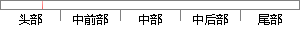

目前广泛使用的标记语言是超文本标记语言(HTML)和可扩展性(XML)置标语言。
片段位置图

相似结果|
相似片段 1：的使用。1996年人们开始致力于描述一个置标语言，它既具有SGML的强大功能和可扩展性，同时又具有HTML的简单性。W3C于1998年2月批准了XML的1．0版本，一个崭新而大有前途的语言诞生了。2_3．4XML的优点首先，XML允许各种不同的专业(如音乐、化学、数学等)开发与自己的特定领域有关的标记语言。
相似片段 2：非常广泛，因为它在语法置标的方面拥有异常强大的工具，并且具有非常好的扩展性。HTML(超文本标记语言)是标准通用标记语言下的一个应用，它不但简单而且免费，因此它获得了广泛的支持。它的简单方便，被普通
相似片段 3：第二代Web语言，具有许多重要特性：①可扩展性15正如Java让使用者声明他们自己的类，XML让使用者创建和使用他们自己的标记而不是HTML的有限词汇表。可扩展性是至关重要的，企业可以用XML为
相似片段 4：3．1 XML概述HTML(hypertextmarkuplanguage，超文本标记语言)以其简单易学、灵活通用的特点在互联网上得到了广泛的应用，使网络用户发布、检索以及交换信息更加方便。但是随着
|
※ 片段修改建议 ※
近似词参考：- 目前：今朝 现在
- 广泛：普遍 遍及
- 使用：利用
- 标记：标识表记标帜 标志 符号
- 语言：说话
- 标记：标识表记标帜 标志 符号
- 语言：说话
系统自动生成语句：今朝普遍利用的标识表记标帜说话是超文本标识表记标帜说话(HTML)和可扩展性(XML)置标说话。
注：本片段修改建议为系统自动生成，仅供参考。